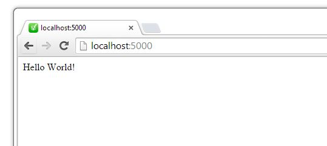

Tutoriel NodeJS
ExpressJS & base de données MongoDB, MySQLDonc tu veux créer des applications Web trendy en NodeJS toi aussi...T'aimerais ça déployer une application back-end en claquant des doigts (si tu en as), te connecter à une base de données pour stocker des informations ultra-secrètes et répondre aux demandes de tes milliers d'utilisateurs.
No big deal. C'est exactement ce que je vais te montrer.
Dislaimer: Ce tutorial s'adresse à tous ceux qui n'ont aucune connaissance de NodeJS.
On va développer une application simple pour gérer un inventaire de films. Idéalement, on veut pouvoir consulter les films, ajouter des films, modifier les informations d'un film et supprimer des films.
NodeJS s'installe très facilement. Simplement télécharger l'auto-installer à partir de http://nodejs.org/ et suivre les étapes d'installation.
Pow! Level up!
"Sérieux? Il va nous expliquer comment créer un dossier?" Oui.
Crée-toi un nouveau dossier "Rotten Vegetables" (source: Rotten Tomatoes) et crée également 2 nouveaux fichiers (package.json, app.js). La structure du dossier devrait ressembler à ceci:
Le contenu du fichier package.json:
Tous les packages npm contiennent un fichier, généralement à la racine du projet, appelé package.json - ce fichier contient différentes métadonnées pertinentes pour le projet. Ce fichier est utilisé pour donner des informations à npm qui permet d'identifier le projet ainsi que gérer les dépendances du projet. Il peut également contenir d'autres métadonnées comme une description du projet, la version du projet en une distribution particulière, les informations de licence, même les données de configuration - tout ce qui peut être vitale à la fois npm et les utilisateurs finaux de l'emballage. Le fichier package.json est normalement situé dans le répertoire racine d'un projet Node.
Une autre étape facile. Ouvre une ligne de commande (command prompt) dans le répertoire racine du projet et tappe "npm install"
C:\Rotten Vegetables> npm install
En gros, npm install va lire le fichier package.json pour vérifier le projet dépend de librairies externes. Dans notre cas, express est une dépendance. npm va donc installer une version d'express (^4.9.8 signifie d'installer la version 4.9.8 ou une plus récente si disponible).
La structure du projet devrait maintenant ressembler à ceci:
Le contenu du fichier app.js
var express = require('express');
var app = express();
app.get('/', function(req, res) {
res.send("Hello World!");
});
app.listen(5000, function() {
console.log("Rotten Vegetables app running at localhost:" + 5000);
});
Là on commence à parler plus sérieusement. Quelques explications:
var express = require('express'); //On inclu la libairie express
var app = express(); //Notre application utilise le framework d'express
/**
params:
req: Un object contenant la requête HTTP reçue
res: Un object contenant la réponse HTTP à envoyer
desc: Lorsqu'on reçoit une requête GET à l'adresse http://localhost:5000/,
on renvoie le string "Hello World!"
**/
app.get('/', function(req, res) {
res.send("Hello World!");
});
//Écoute sur le port 5000.
app.listen(5000), function() {
console.log("Rotten Vegetables app running at localhost:" + 5000);
});
On commence déjà à voir la magie de NodeJS & Express. Il serait temps de tester ça.
Pour démarrer l'application il suffit d'ouvrir une ligne de commande (command prompt) dans le dossier racine du projet et d'exécuter la commande node app.js.
C:\Rotten Vegetables> node app.js
Rotten Vegetables app running at localhost:5000
Ouvres ton navigateur et rends-toi à l'adresse http://localhost:5000/. Tu devrais voir le même résultat:
Le but est de consulter la liste de tous les films. Créons donc une route GET pour obtenir les données & créons une liste bidon de films.
var express = require('express');
var app = express();
app.get('/', function(req, res) {
res.send("Hello World!");
});
app.get('/movies', function(req, res) {
res.send(movies);
});
app.listen(5000, function() {
console.log("Rotten Vegetables app running at localhost:" + 5000);
});
var movies = [
{"id" : 1, "title": "The Shining", "genre": "horror"},
{"id" : 2, "title": "Fargo", "genre": "drama"},
{"id" : 3, "title": "TED", "genre": "comedy"},
{"id" : 4, "title": "Armageddon", "genre": "action"},
{"id" : 1, "title": "Harry Potter", "genre": "fantasy"}
];
Que se passe t-il ici? Lorsqu'on se rend à l'adresse http://localhost:5000/movies, on retourne tous les films contenu dans la "base de données".
Le but est de consulter un film en particulier. Naturellement, chaque film est représenté par un identifiant unique (ID). Créons donc une route GET pour obtenir un film par son ID.
app.get('/movies/:id', function(req, res) {
for (var i = 0; i < movies.length; i++) {
if (movies[i].id == req.params.id) {
res.send(movies[i]);
return;
}
}
res.send("aucun film trouvé");
});
Que se passe t-il ici? Lorsqu'on se rend à l'adresse http://localhost:5000/movies/3, on retourne le film avec l'ID 3.
Le but est d'ajouter un nouveau film dans la base de données. Créons donc un route POST qui reçoit en paramètre un film:
app.post('/movies', function(req, res) {
//req.body contient l'object json envoyé avec la requête POST
//dans l'exemple ci-bas, req.body contient: {"title":"The Godfather","genre":"drama"}
var newMovie = req.body;
//générer un id
newMovie.id = Date.now();
//ajouter le nouveau film à la BD
movies.push(newMovie);
//retourner le nouveau film ajouté au client
res.send(newMovie);
});
Voic un exemple de requête HTTP:
curl -H "Content-Type: application/json"
-d '{"title":"The Godfather","genre":"drama"}' http://localhost:5000/movies